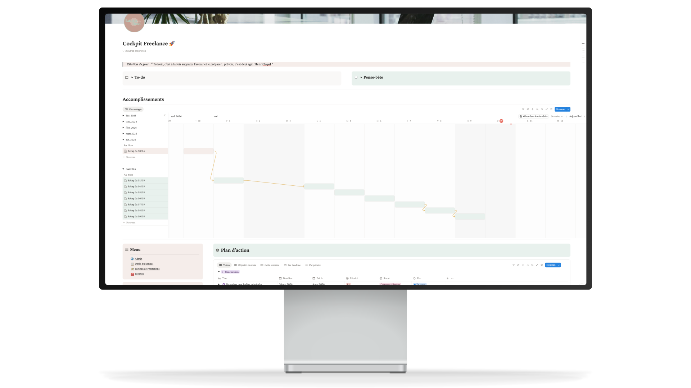
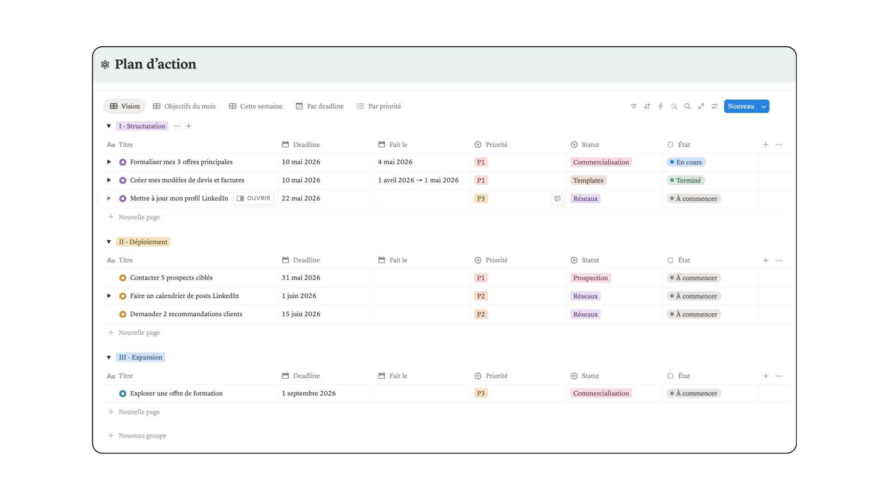
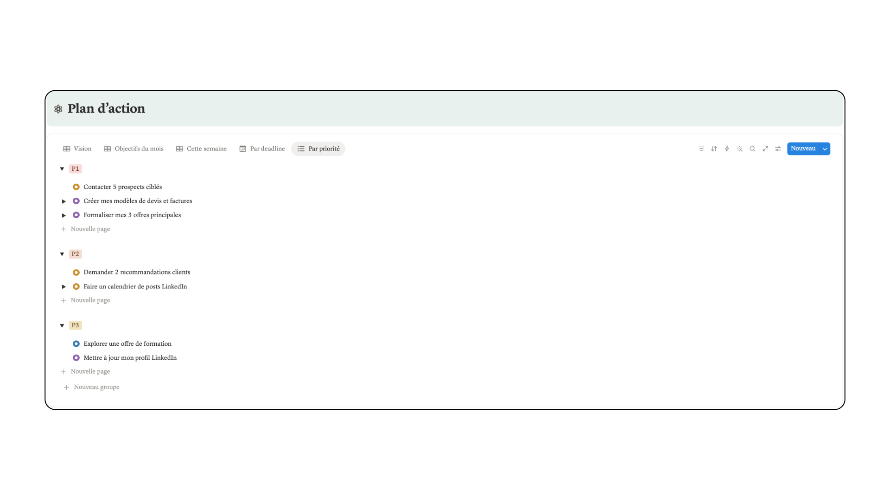
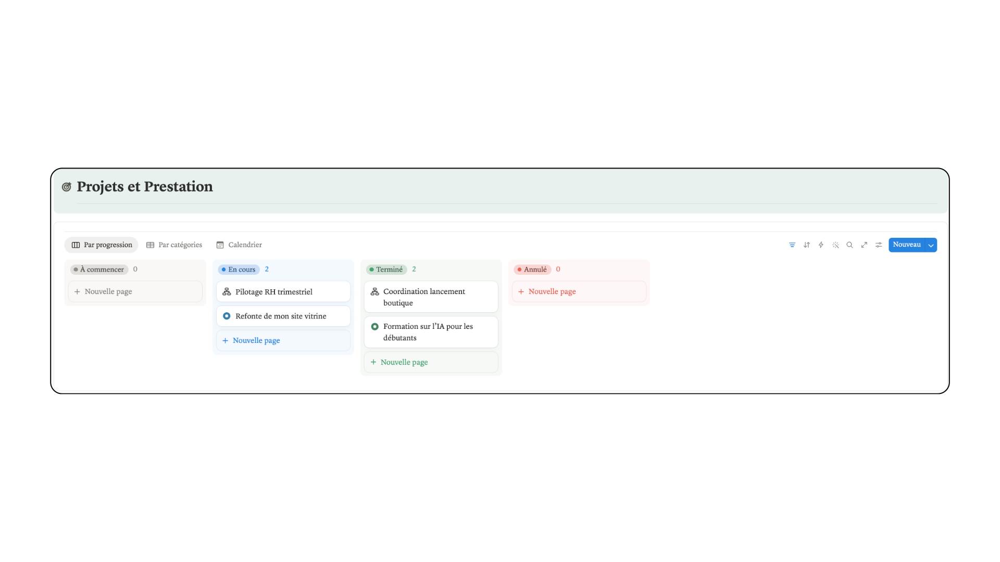
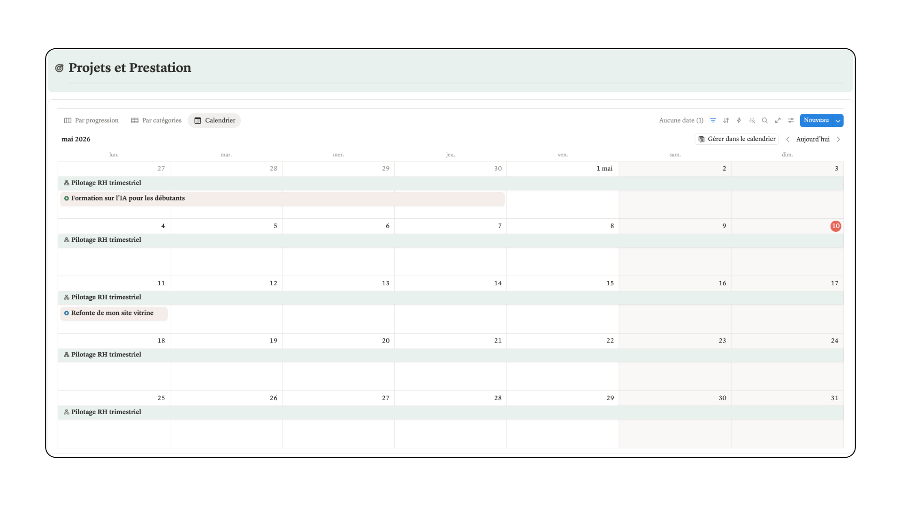
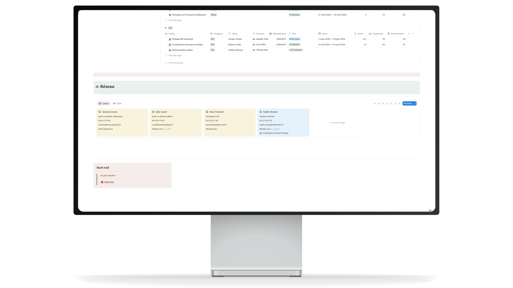
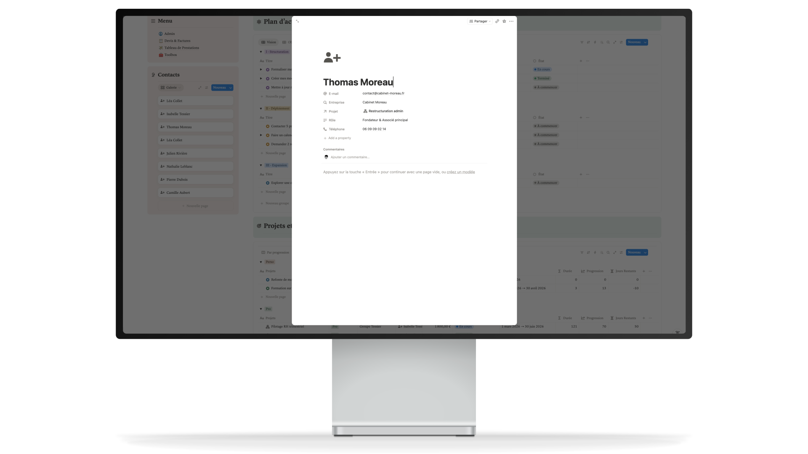

Un workspace sur mesure pour piloter une activité freelance de bout en bout.


Laura est Office Manager freelance. Elle pilote l'administration et les projets opérationnels de plusieurs entreprises clientes simultanément : comptabilité, coordination, suivi de projets, communication interne. Un métier aux contours flous, où ses clients lui délèguent tout, y compris ce qui dépasse largement sa mission initiale. Sans process, sans espace de travail concret, elle gérait son activité et celle de ses clients avec des fichiers Google Sheets éparpillés et tout dans sa tête. Résultat : elle faisait tout, sans cadre, sans limite, et en étant payée à l'heure.
Audit de son organisation, de ses outils et de sa manière de travailler. Puis conception et livraison d'un workspace Notion centralisé, pensé pour son métier et son rythme. Pas un template générique mais un cockpit sculpté juste pour elle.
Dashboard · Plan d'action · Projets · Réseau
Chaque matin, Laura ouvre son workspace sur sa citation favorite. Le cap est donné. Deux post-its numériques l'attendent : elle peut les ouvrir et les fermer à volonté. Sa to-do du jour pour ne rien laisser filer, son pense-bête pour les idées à ne pas perdre. Juste en dessous, ses accomplissements s'affichent jour après jour. Pas pour cocher des cases, mais pour voir le chemin parcouru. Les jours où elle doute d'avancer, un coup d'œil suffit pour se rappeler que oui, elle avance. Et les jours où les blocs sont vides, c'est le signal qu'il est temps de reprendre le rythme.




Son plan d'action est découpé en trois phases : Structuration, Déploiement, Expansion. Elle peut naviguer entre cinq vues pour avoir d'un coup une vision globale, ses objectifs du mois, ses objectifs de la semaine, ses deadlines et ses priorités. Elle avance méthodiquement, en sachant exactement ce qui est urgent, ce qui peut attendre, et où elle en est.
Ses projets clients et personnels sont centralisés dans une seule base. Vue kanban par progression, vue calendrier pour anticiper les échéances. Chaque ligne est une page dans laquelle elle pilote l'activité du projet en détail.




Partenaires, collaborateurs, sous-traitants. Chaque contact est une fiche complète : titre, entreprise, projet commun, coordonnées. Quand elle a besoin d'aide ou d'une collaboration, elle sait immédiatement qui appeler.
Un accompagnement sur-mesure du début à la fin.
Vos outils sont éparpillés ? Vos projets vivent dans des fichiers séparés ?
Votre activité mérite d'avoir un espace à sa hauteur.
Parlons de votre cockpit